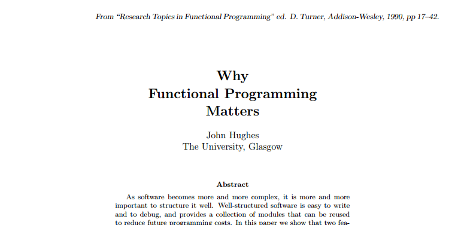

Wszystko co powinieneś wiedzieć
F(x) → y
G(y) → z
H(x) → z
H(x) = G(F(x))
Funkcje są czyste
Możemy je komponować
A te nieczyste to temat na doktorat
José Valim
Dynamiczny
Funkcyjny
Silnie typowany
Współbieżny
Ble, ble, ble
Definicja uproszczona
Bo Erlang ma paskudną składnię
Zmienne są „pod spodem” wzorcami
Podstawowa jednosta organizacyjna
Można je zagnieżdżać
Mogą zawierać struktury
Strażnicy określaja warunki wywołania funkcji
Wzorce pozwalają na wywołania z pewnym kontekstem
Struktury bazują na mapach
Typy zabezpieczają nasz kod
Rekordy to makra ułatwiające pracę
Elixir jest rozszerzalny
Wiele elementów składni to makra
Testy, operator potoku, dokumentacja
Elixir działa na stosie Erlanga
Model aktorowy
Pełne wsparcie dla OTP
Język to nie wszystko
Ważne są narzędzia
Mix – budowanie
EEx – szablony
Phoenix – web
Hex – repozytorium
Elixir jest prosty
Ma przyjazna składnię
Szybko rosnącą społeczność